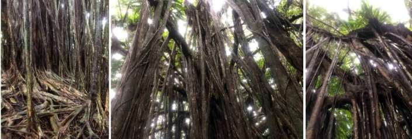
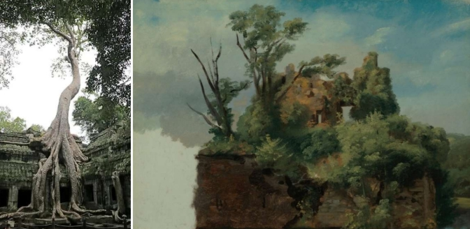
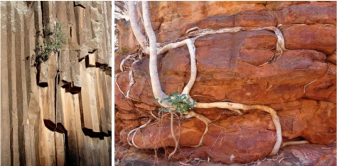
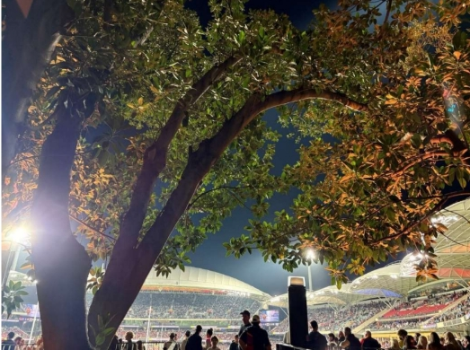

After the gold rush
(and then – slowly, but surely – the forest took back the city)
After the Goldrush, Neil Young 1970
Too apocalyptic? Well probably not…
Down the road from Barcelona sits Valencia’s hilltop Sagunt/ Sagunto. From the iron age it was known as Arse (and in need of name change). After Greek colonization, In Roman times it became Saguntum, which after its sieged falling to Hannibal prompted the Second Punic War in 219BC. With more conquerings it morphed to Iberian Morviedro, and then Arabic Morbatar. It has been associated through its Jewish connections with King Solomon. An always important place – and, seemingly, because of that importance it has attracted these waves of ruination. Quite beautiful ruination really…
And should tourist footfall cease, one imagines endemic shrubbery, already on the march, will engulf all. And if Neil’s dream prevails, will Valencia’s orange groves wild up and over-run the newer sprawling conurbation on the plains?

Indeed, from Luxor to Angkor Wat, ancient cities of the day have emptied and crumbled. And where climate allows, it’s the very integral, productive and soulfully enriching greenery of those places, that gave them joy when thriving, that have concluded their ruination.
Which of course has been inspiration to many an artist, especially through the1870s.
As a contemporary western observer looking in, from the Western Pacific through northern Australia to Asia and the Subcontinent, the talismanic, aerial rooted Banyan, ficus india, ‘the Strangler Fig’, is the tree most wonderfully associable with ruins – and the process of ruination.

Within all of the ancient cultures of that realm it is also a special – a sacred – tree culturally, a landmark meeting place, a ‘tree of knowledge’.
The ficus, across all its forms, appears indomitable. Across more arid Australia diverse hardy variants find home in minute crevices in the most arid and often monolithic rocks, acting as an agent in their splitting and erosion, and, hence, shaping of the land.

In south-eastern Asia its self-clinging vine form, ficus pumila, the Creeping Fig’, will de-layer stone – and of course lesser man-made masonry and plasters. The domestic (fruit tree) fig, aside from its famous leaf, is characterised by its virile surface roots that readily give rise to suckers – and eventually a forest of trees.
Australia’s Moreton Bay Fig, ficus macrophylla is a mean-fruiting but grand-scale fig, hallmarked by massive, snaking, blade-like buttresses, its rising roots; and it has aerial roots to boot. It is also a culturally significant tree, a ‘family tree’ with purposes in gathering, weaving and birthing, all folding into ‘dreamtime’ storytelling. For me, it is the tree – or accurately 3 trees – that stopped my local stadium, Adelaide Oval being fully ringed in concrete, colosseum-like.

And from that small lapse in human triumphalism, Nature, through the Oval’s heritage figs, I’d reckon retains potent ability to bring down – in time – all that aggrandising construction.
The oldest biblical scholars (Hadrian through to Thomas Aquinas), rather than misled post 12th century storytellers, will tell you that, by proper Hebrew translation, that it wasn’t an apple but a fig that Eve consumed in the Garden of Eden – which of course makes sense of the fig-leaves that Eve and Adam leapt to in cover up. The fig was there at the Beginning – and so it seems it will be at the End!
So, back to Barcelona and ‘Parlour Gardens Dreams from the Rooftop’…
To me sowing the seed of green rooftops in Barcelona now seems fraught with danger – especially if we adopt a ficus! …
For, the roots of the ficus hold no fear for masonry, nor for their being out of the earth whilst their seeking to return to it.
Crazily, scarily it seems that they’re like us, and happy to breathe the air.
But, unlike us, they really do play a long game, bit by bit inserting themselves into our spaces – they’re slow but winners.
Yes, despite what at times seems the (consumerist) world’s hell-bent desire to wipe Nature from the face of our planet, our ‘Dream from the Rooftop’, accepts the inevitable – acknowledging – and if implemented, probably hastening – the inevitable winning by the power of Nature over the creative endeavours of Man.
I’m not sure that I’ve answered the brief to inspire “[in] The Imaginitive the pleasures of the garden”, but, in these times of rampaging excess, I do hope it helps us to grow in humility.